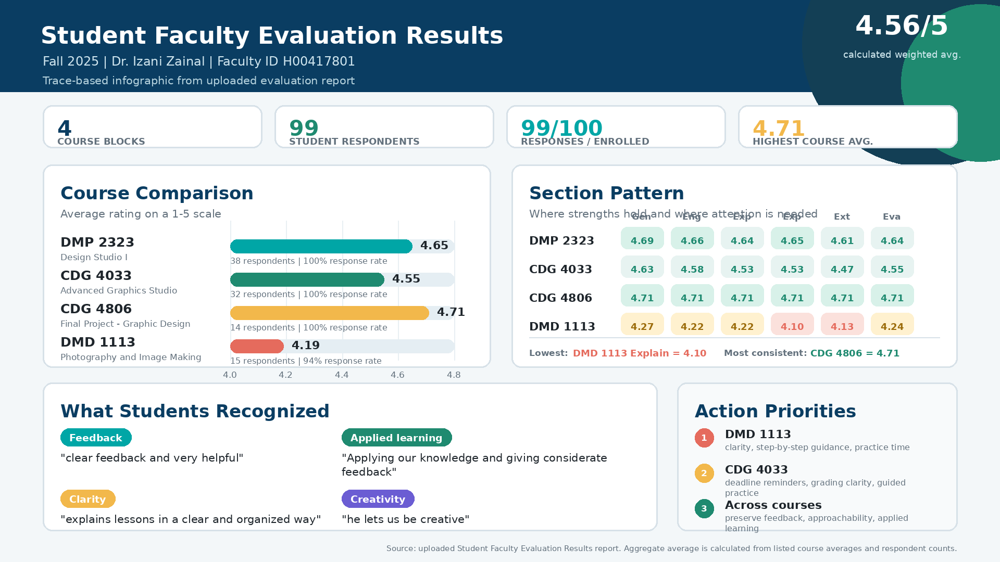
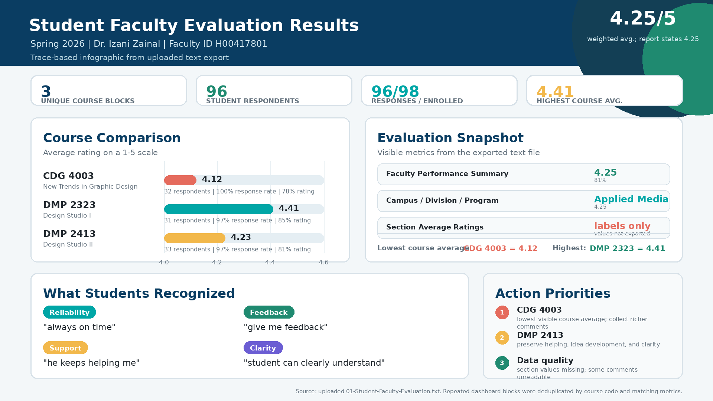

Best-paper and presentation honours, teaching awards, advisory appointments, doctoral examinations, and community service across a 25-year career.
Preserving UAE Cultural Heritage through Generative AI and Immersive Technologies.
Navigating the Metaverse: A Framework for Establishing and Thriving in Virtual Fashion Retail.
Enhancing Photorealism in Interior Design: Insights from the PRIDE Framework.
Lights, Camera, AI Action: Navigating the disruptive potential of AI in filmmaking.
International Visualization, Informatics and Technology Conference.
GBP 1,000 award for a top-three research proposal on EU-funded VR heritage.
Recognised for outstanding teaching; Merit Letter from the MMU President.
First-prize award for annual-report cover design.
Top placements in university web-design competition.
Official student–faculty evaluation results across two consecutive semesters at the Higher Colleges of Technology — consistently rated well above expectations. Hover over a report to enlarge it; move your mouse away to shrink it back.


assets folder as eval-fall-2025.png and eval-spring-2026.png. Until the files are added, the score placeholders above are shown.